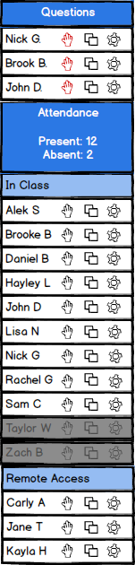

The roster is sorted and organized into a way that is meaningful for the presenter to understand. The 'Questions' section is organized like a queue. The student that raises their hand electronically first is at the top of the 'Questions' section and students with a qestion have their hand icon changed to red. Refer to presenter question management to see how to view the questions the students have that are listed under the 'Questions' section.
Under the 'Attendance' section, students are listed alphabetically by first name then last name. This sorting is separate for the individual subsections 'In Class' and 'Remote Access'. Students that are absent from the class are listed under the 'In Class' section but have their name grayed out to indicate their absence. The absent names are listed alphabetically by first name then last name as well.
Figure 1 shows the 'Roster' organized into sections and sorted.

Figure 1: Organized and Sorted Roster